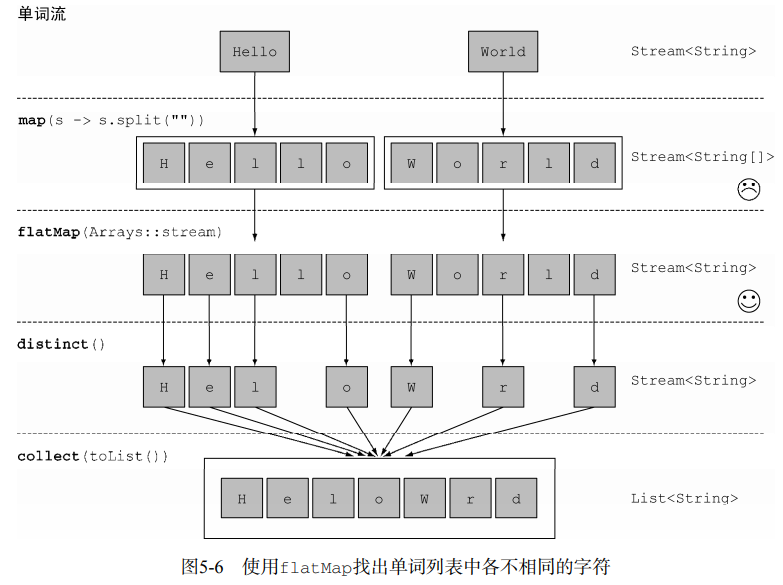
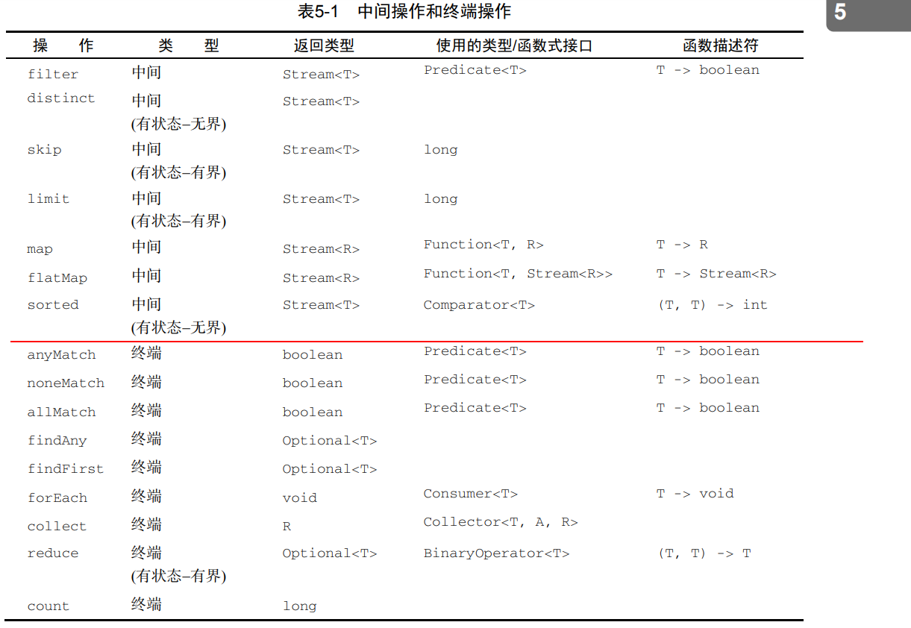

1.筛选
1.1用谓词筛选
filter方法： 该操作会接受一个谓词（一个返回boolean的函数）作为参数，筛选出true
1.2筛选各异的元素
distinct的方法: 在迭代的单元中去重
1.3截短流
流支持limit(n)方法，该方法会返回一个不超过给定长度的流
1.4跳过元素
持skip(n)方法，返回一个扔掉了前n个元素的流
2映射
2.1对流中每一个元素应用函数
持map方法，它会接受一个函数作为参数。这个函数会被应用到每个元素上，并将其映 射成一个新的元素
2.2 流的扁平化
flatmap方法让你把一个流中的每个值都换成另一个流，然后把所有的流连接 起来成为一个流

笛卡尔乘积组合数字，放到list中然后打印出来
import java.util.ArrayList;
import java.util.Arrays;
import java.util.List;
import java.util.stream.Collectors;
public class Main{
public static void main(String[] args){
List<Integer> numbers1 = Arrays.asList(1, 2, 3);
List<Integer> numbers2 = Arrays.asList(3, 4);
//会返回一个stream<stream<Integer[]>>对象，使用flatmap扁平化，以便得到一个
//stream<Integer[]>
List<int[]> pairs =
numbers1.stream()
.flatMap(i -> numbers2.stream()
.map(j -> new int[]{i, j})
)
.collect(Collectors.toList());
pairs.stream()
.map(Arrays::toString)
.forEach(System.out::println);
}
}
/*
[1, 3]
[1, 4]
[2, 3]
[2, 4]
[3, 3]
[3, 4]
*/
